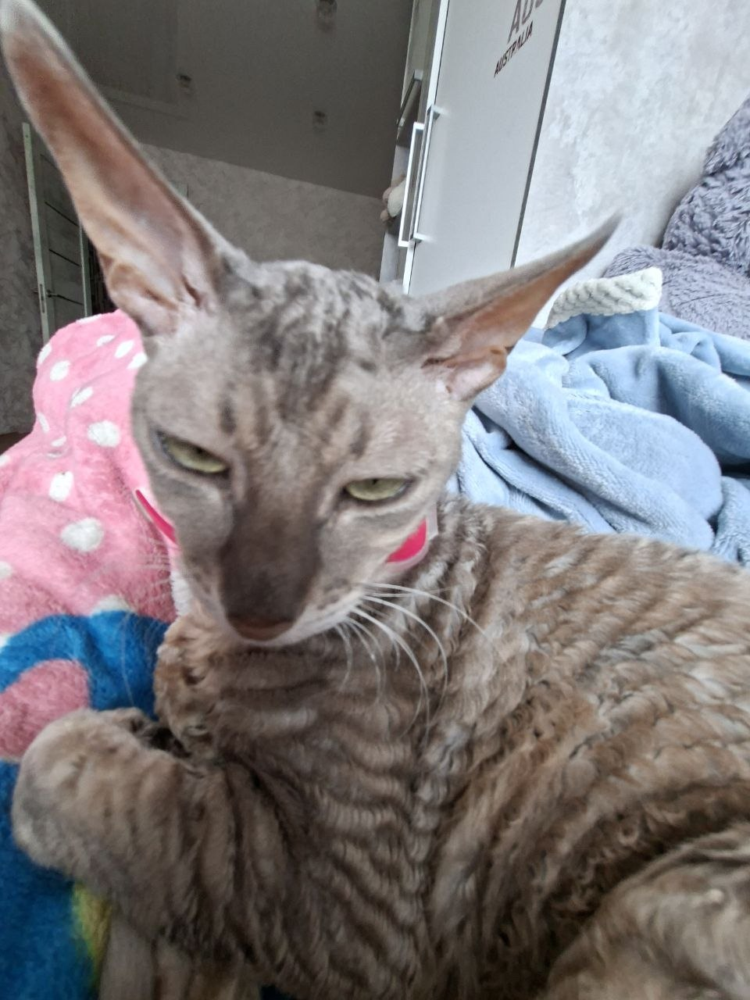
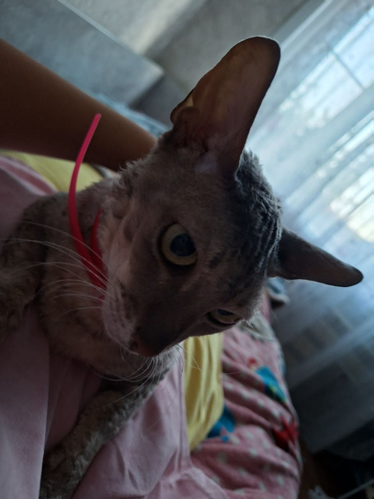
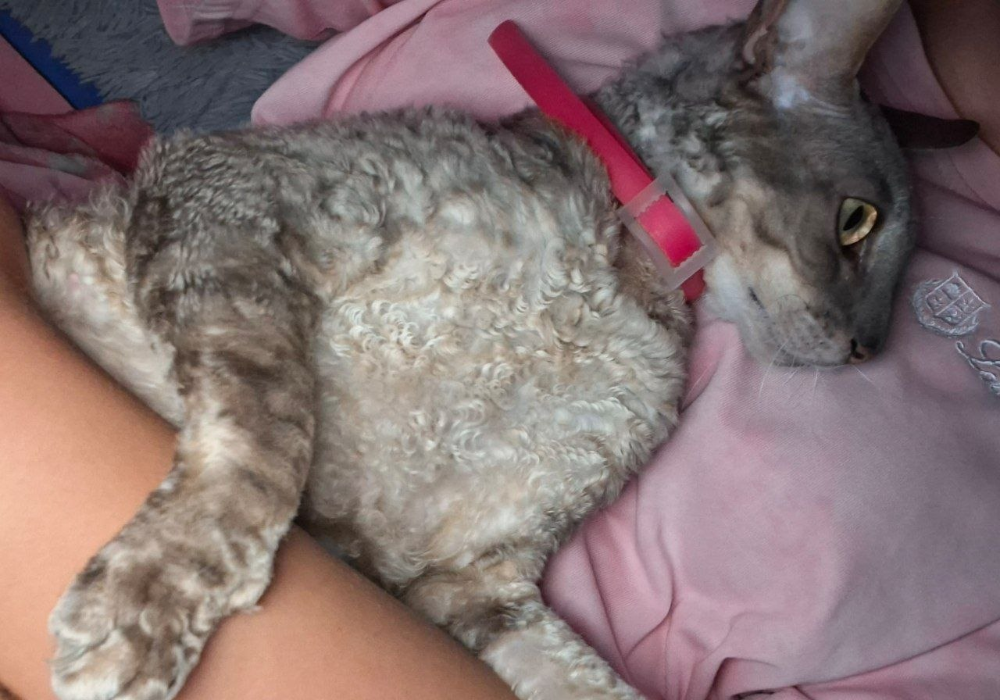

Межгалактическая инопланетянка, ворующая чипсы и разбивающая стереотипы о домашних животных.

Один раз Айгуль решила, что стены дома слишком малы для её космического эго, и технично съебалась на улицу. План перехвата длился ровно 2 часа. Кожаные мешки бегали, суетились и пытались поймать инопланетянку, пока та тестировала свои навыки паркура на дикой природе.
Зачем просить паштет, если можно взять всё под свой контроль? Наглая экономическая диверсия: Айгуль вскрыла и в одиночку схавала целую пачку чипсов в одно рыло. Без глутамата натрия жизнь не та, особенно когда ты сильная и независимая.
Когда все чипсы съедены, а шторы успешно атакованы, Айгуль превращается в самого ласкового пришельца в мире. Она приходит на ручки, включает свой встроенный мурчальник на максимум и гипнотизирует огромными желтыми глазами.
* Мурчаление Айгуль официально признано безопасным аналогом успокоительного.
